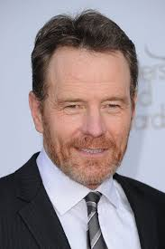
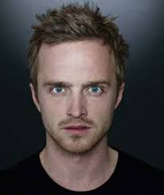
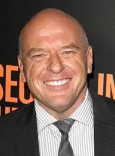
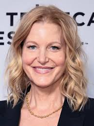
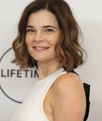
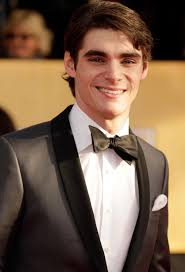
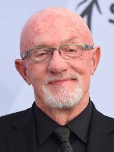
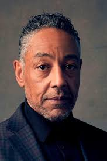

BRYAN CRASTON
(Walter White)

ARON PAUL
(Jesse Pinkman)

DEAN NORRIS
(Hank Schrader)

ANNA GUN
(Skyler White)

BESTY BRANDT
(Marie Schrader)

RJ MITTE
(Walter White Jr.)

JONATHAN BANKS
(Mike Ehrmantraut)


GINCARLO ESPOSITO
(Gustavo Fring)
-
Bryan Cranston interpretou Walter White em "Breaking Bad". Walter White é um professor de química que, após ser diagnosticado com câncer, começa a fabricar e vender metanfetamina para garantir o futuro financeiro de sua família, mergulhando cada vez mais no mundo do crime.
-
Aaron Paul interpretou Jesse Pinkman em "Breaking Bad". Jesse é um ex-aluno de Walter White e se torna seu parceiro na produção e venda de metanfetamina. Ele começa como um pequeno traficante e acaba desempenhando um papel crucial no desenvolvimento da trama, com sua relação complicada e evolutiva com Walter sendo central para a série
-
Dean Norris interpretou Hank Schrader em "Breaking Bad". Hank é o cunhado de Walter White e um agente da DEA (Administração para o Controle de Drogas). Ele está determinado a combater o tráfico de drogas e, sem saber, está investigando o próprio Walter, que é o fabricante de metanfetamina que ele está tentando capturar.
-
Anna Gunn interpretou Skyler White em "Breaking Bad". Skyler é a esposa de Walter White e desempenha um papel crucial na série, lidando com as consequências das escolhas de Walter enquanto ele mergulha no mundo do crime.Ela começa a suspeitar das atividades de Walter e enfrenta uma série de desafios e dilemas morais ao longo da trama.
-
Betsy Brandt interpretou Marie Schrader em "Breaking Bad". Marie é a irmã de Skyler White e cunhada de Walter White. Ela trabalha como uma assistente social e tem uma personalidade forte e complexa, lidando com seus próprios problemas enquanto está profundamente envolvida nas questões familiares e no impacto das ações de Walter.
-
RJ Mitte interpretou Walter White Jr. em "Breaking Bad". Walter White Jr. é o filho de Walter White e Skyler White. Ele tem paralisia cerebral e é um personagem importante que lida com as complicações de sua condição e o impacto das ações de seu pai na vida da família.
-
Jonathan Banks interpretou Mike Ehrmantraut em "Breaking Bad". Mike é um ex-policial que trabalha como segurança e "fixer" para Saul Goodman. Ele é conhecido por sua eficiência, habilidade em lidar com situações complicadas e seu comportamento reservado. Mike também se torna um aliado crucial para Walter White e Jesse Pinkman ao longo da série.
-
Bob Odenkirk interpretou Saul Goodman em "Breaking Bad". Saul é um advogado criminal carismático e inescrupuloso que se torna o advogado de Walter White e Jesse Pinkman. Ele é conhecido por suas práticas legais questionáveis e seu jeito persuasivo.
-
Giancarlo Esposito interpretou Gustavo "Gus" Fring em "Breaking Bad". Gus é um dos principais antagonistas da série, um respeitável proprietário de uma cadeia de fast food chamada Los Pollos Hermanos, que na verdade serve como fachada para seu império de tráfico de drogas. Ele é um personagem calculista e meticuloso, que mantém uma fachada de respeitabilidade enquanto controla uma vasta operação criminosa.